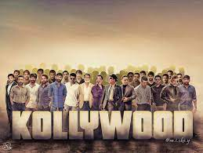
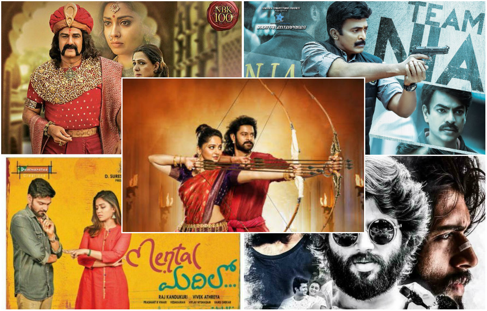

Indian cinema
August,5 2022

The cinema of India comprises films produced in India, where more than 1800 movies are produced annually. Major centres of film production in the country include Mumbai, Chennai, Hyderabad, Kolkata, New Delhi, Amritsar, Thiruvananthapuram-Kochi, Bangalore, Bhubaneshwar-Cuttack, and Guwahati. As of 2018, India ranked first in terms of annual film output. In 2015, India had a total box office gross of US$2.1 billion, the third largest in the world. The overall revenue of Indian cinema reached US$2.7 billion in 2019.The industry is segmented by language, with Hindi film industry (Bollywood), Tamil film industry (Kollywood) and Telugu film industry (Tollywood) as the biggest. Other prominent film industries include Malayalam, Kannada, Bengali, Marathi and Punjabi film industry. By 2020, the combined revenue of all other regional film industries has surpassed that of the Hindi film industry.Indian cinema is a global enterprise. Its films have a following throughout Southern Asia and across Europe, North America, Asia, the Greater Middle East, Eastern Africa, China and elsewhere, reaching over 90 countries. Films like Bahubali: The Beginning were dubbed in more than three languages, thus starting a Pan-India films movement. Millions of Indians overseas watch Indian films, accounting for some 12% of revenues.Major Indian enterprises in the film industry include AVM Productions, Sun Pictures, AGS Entertainment, Geetha Arts, Zee, Mythri Movie Makers, UTV, Suresh Productions, Eros International, Aascar Films and Yash Raj Films.
The history of cinema in India extends back to the beginning of the film era. Following the screening of the Lumière and Robert Paul moving pictures in London (1896), commercial cinematography became a worldwide sensation and by mid-1896 both Lumière and Robert Paul films had been shown in Bombay.In 1897, a film presentation by Professor Stevenson featured a stage show at Calcutta's Star Theatre. With Stevenson's encouragement and camera Hiralal Sen, an Indian photographer, made a film of scenes from that show, namely The Flower of Persia (1898).[38] The Wrestlers (1899) by H. S. Bhatavdekar, showing a wrestling match at the Hanging Gardens in Bombay, was the first film to be shot by an Indian and the first Indian documentary film.The first Indian film released in India was Shree Pundalik, a silent film in Marathi by Dadasaheb Torne on 18 May 1912 at Coronation Cinematograph, Bombay. Some have argued that Pundalik was not the first Indian film, because it was a photographic recording of a play, and because the cameraman was a British man named Johnson and the film was processed in London.The second full-length motion picture in India was produced by Dadasaheb Phalke, Phalke is seen as the pioneer of the Indian film industry and a scholar of India's languages and culture. He employed elements from Sanskrit epics to produce his Raja Harishchandra (1913), a silent film in Marathi. The female characters in the film were played by male actors. Only one print of the film was made, for showing at the Coronation Cinematograph on 3 May 1913. It was a commercial success. The first silent film in Tamil, Keechaka Vadham was made by R. Nataraja Mudaliar in 1916.The first chain of Indian cinemas, Madan Theatre was owned by Parsi entrepreneur Jamshedji Framji Madan, who oversaw production of 10 films annually and distributed them throughout India beginning in 1902.[47] He founded Elphinstone Bioscope Company in Calcutta. Elphinstone merged into Madan Theatres Limited in 1919, which had brought many of Bengal's most popular literary works to the stage. He also produced Satyawadi Raja Harishchandra in 1917, a remake of Phalke's Raja Harishchandra (1913).Raghupathi Venkaiah Naidu from Machilipatnam was an Indian artist and a film pioneer. From 1909, he was involved in many aspects of Indian cinema, travelling across Asia. He was the first to build and own cinemas in Madras. He was credited as the father of Telugu cinema. In South India, the first Telugu and Tamil bilingual talkie Kalidas was released on 31 October 1931.[50] Nataraja Mudaliar established South India's first film studio in Madras.Film steadily gained popularity across India. Tickets were affordable to the masses (as low as an anna (one-sixteenth of a rupee) in Bombay) with additional comforts available at a higher price.
Young producers began to incorporate elements of Indian social life and culture into cinema, others brought new ideas from across the world. Global audiences and markets soon became aware of India's film industry.In 1927, the British Government, to promote the market in India for British films over American ones, formed the Indian Cinematograph Enquiry Committee. The ICC consisted of three Brits and three Indians, led by T. Rangachari, a Madras lawyer. This committee failed to support the desired recommendations of supporting British Film, instead recommending support for the fledgling Indian film industry, their suggestions were shelved.Ardeshir Irani released Alam Ara, the first Indian talkie, on 14 March 1931. Irani later produced the first south Indian talkie film Kalidas directed by H. M. Reddy released on 31 October 1931. Jumai Shasthi was the first Bengali talkie. Chittor V. Nagaiah, was one of the first multilingual film actor/singer/composer/producer/directors in India. He was known as India's Paul Muni.In 1933, East India Film Company produced its first Telugu film, Savitri. Based on a stage play by Mylavaram Bala Bharathi Samajam, the film was directed by C. Pullaiah with stage actors Vemuri Gaggaiah and Dasari Ramathilakam. The film received an honorary diploma at the 2nd Venice International Film Festival.On 10 March 1935, another pioneer film maker Jyoti Prasad Agarwala made his first film Joymoti in Assamese. Jyoti Prasad went to Berlin to learn more about films. Indramalati is another film he himself produced and directed after Joymoti. The first film studio in South India, Durga Cinetone was built in 1936 by Nidamarthi Surayya in Rajahmundry, Andhra Pradesh.The 1930s saw the rise of music in Indian cinema with musicals such as Indra Sabha and Devi Devyani marking the beginning of song-and-dance in Indian films. Studios emerged by 1935 in major cities such as Madras, Calcutta and Bombay as filmmaking became an established craft, exemplified by the success of Devdas. directed by an Assamese film maker Pramathesh Baruah. In 1937, Kisan Kanhiya directed by Moti B was released, the first colour film made in India.[62] The 1940 film, Vishwa Mohini, is the first Indian film to depict the Indian movie world. The film was directed by Y. V. Rao and scripted by Balijepalli Lakshmikanta Kavi.Swamikannu Vincent, who had built the first cinema of South India in Coimbatore, introduced the concept of "Tent Cinema" in which a tent was erected on a stretch of open land to screen films. The first of its kind was in Madras, called Edison's Grand Cinemamegaphone. This was due to the fact that electric carbons were used for motion picture projectors. Bombay Talkies opened in 1934 and Prabhat Studios in Pune began production of Marathi films meant.R. S. D. Choudhury produced Wrath (1930), which was banned by the British Raj for its depiction of Indian actors as leaders during the Indian independence movement. Sant Tukaram, a 1936 film based on the life of Tukaram (1608–50), a Varkari Sant and spiritual poet became the first Indian film to be screened at an international film festival, at the 1937 edition of the Venice Film Festival. The film was judged one of the three best films of the year. In 1938, Gudavalli Ramabrahmam, co-produced and directed the social problem film, Raithu Bidda, which was also banned by the British administration, for depicting the peasant uprising among the Zamindars during the British raj.
Bollywood
Hindi
January,20 2022
Hindi cinema, often known as Bollywood and formerly as Bombay cinema, is the Indian Hindi-language film industry based in Mumbai (formerly Bombay). The term is a portmanteau of "Bombay" and "Hollywood". The industry is related to Cinema of South India and other Indian film industries, making up Indian cinema—the world's largest by number of feature films produced.In 2017, Indian cinema produced 1,986 feature films, with Bollywood as its largest filmmaker, producing 364 Hindi films the same year. Bollywood represents 43 percent of Indian net box-office revenue; Tamil and Telugu cinema represent 36 percent, and the remaining regional cinema constituted 21 percent in 2014. Bollywood has overtaken the U.S. film industry to become the largest centre for film production in the world. In 2001 ticket sales, Indian cinema (including Bollywood) reportedly sold an estimated 3.6 billion tickets worldwide, compared to Hollywood's 2.6 billion tickets sold. Bollywood films tend to use vernacular Hindustani, mutually intelligible by people who self-identify as speaking either Hindi or Urdu, and modern Bollywood movies increasingly incorporate elements of Hinglish.The most popular commercial genre in Bollywood since the 1970s has been the masala film, which freely mixes different genres including action, comedy, romance, drama and melodrama along with musical numbers. Masala films generally fall under the musical film genre, of which Indian cinema has been the largest producer since the 1960s when it exceeded the American film industry's total musical output after musical films declined in the West; the first Indian musical talkie was Alam Ara (1931), several years after the first Hollywood musical talkie The Jazz Singer (1927). Alongside commercial masala films, a distinctive genre of art films known as parallel cinema has also existed, presenting realistic content and avoidance of musical numbers. In more recent years, the distinction between commercial masala and parallel cinema has been gradually blurring, with an increasing number of mainstream films adopting the conventions which were once strictly associated with parallel cinema.
"Bollywood" is a portmanteau derived from Bombay (the former name of Mumbai) and "Hollywood", a shorthand reference for the American film industry which is based in Hollywood, California.The term "Tollywood", for the Tollygunge-based cinema of West Bengal, predated "Bollywood". It was used in a 1932 American Cinematographer article by Wilford E. Deming, an American engineer who helped produce the first Indian sound picture."Bollywood" was probably invented in Bombay-based film trade journals in the 1960s or 1970s, though the exact inventor varies by account. Film journalist Bevinda Collaco claims she coined the term for the title of her column in Screen magazine. Her column entitled "On the Bollywood Beat" covered studio news and celebrity gossip. Other sources state that lyricist, filmmaker and scholar Amit Khanna was its creator. It's unknown if it was derived from "Hollywood" through "Tollywood", or was inspired directly by "Hollywood".The term has been criticised by some film journalists and critics, who believe it implies that the industry is a poor cousin of Hollywood."Bollywood" has since inspired a long list of Hollywood-inspired nicknames.
In 1897, a film presentation by Professor Stevenson featured a stage show at Calcutta's Star Theatre. With Stevenson's encouragement and camera, Hiralal Sen, an Indian photographer, made a film of scenes from that show, The Flower of Persia (1898).The Wrestlers (1899) by H. S. Bhatavdekar showed a wrestling match at the Hanging Gardens in Bombay.Dadasaheb Phalke's silent Raja Harishchandra (1913) is the first feature film made in India. By the 1930s, the industry was producing over 200 films per year. The first Indian sound film, Ardeshir Irani's Alam Ara (1931), was commercially successful. With a great demand for talkies and musicals, Bollywood and the other regional film industries quickly switched to sound films.The 1930s and 1940s were tumultuous times; India was buffeted by the Great Depression, World War II, the Indian independence movement, and the violence of the Partition. Although most Bollywood films were unabashedly escapist, a number of filmmakers tackled tough social issues or used the struggle for Indian independence as a backdrop for their films. Irani made the first Hindi colour film, Kisan Kanya, in 1937. The following year, he made a colour version of Mother India. However, colour did not become a popular feature until the late 1950s. At this time, lavish romantic musicals and melodramas were cinematic staples.The decade of the 1940s saw an expansion of the Bollywood's commercial market and its presence in the national consciousness. The year 1943 saw the arrival of Indian cinema's first 'blockbuster' offering, the movie Kismet, which grossed in excess of the important barrier of one crore (10 million) rupees, made on a budget of only two lakh (0.2 million) rupees. Kismet tackled contemporary issues, especially those arising from the Indian Independence movement, and went on to become "the longest running hit of Indian cinema", a title it held till the 1970s. Film personalities like Bimal Roy, Sahir Ludhianvi and Prithviraj Kapoor participated in the creation of a national movement against colonial rule in India, while simultaneously leveraging the popular political movement to increase their own visibility and popularity. Themes from the Independence Movement deeply influenced Bollywood directors, screen-play writers, and lyricists, who saw their films in the context of social reform and the problems of the common people.Although the 1947 partition of India, divided the country into the Republic of India and Pakistan, it precipitated the migration of film-making talent from film making centers like Lahore and Calcutta, which bore the brunt of the partition violence. These events further consolidated the Mumbai film industry's position as the preeminent center for film production in India.
The period from the late 1940s to the early 1960s, after India's independence, is regarded by film historians as the Golden Age of Hindi cinema.Some of the most critically acclaimed Hindi films of all time were produced during this time. Examples include Pyaasa (1957) and Kaagaz Ke Phool (1959), directed by Guru Dutt and written by Abrar Alvi; Awaara (1951) and Shree 420 (1955), directed by Raj Kapoor and written by Khwaja Ahmad Abbas, and Aan (1952), directed by Mehboob Khan and starring Dilip Kumar. The films explored social themes, primarily dealing with working-class life in India (particularly urban life) in the first two examples. Awaara presented the city as both nightmare and dream, and Pyaasa critiqued the unreality of urban life.Mehboob Khan's Mother India (1957), a remake of his earlier Aurat (1940), was the first Indian film nominated for the Academy Award for Best Foreign Language Film; it lost by a single vote.[48] Mother India defined conventional Hindi cinema for decades. It spawned a genre of dacoit films, in turn defined by Gunga Jumna (1961). Written and produced by Dilip Kumar, Gunga Jumna was a dacoit crime drama about two brothers on opposite sides of the law (a theme which became common in Indian films during the 1970s). Some of the best-known epic films of Hindi cinema were also produced at this time, such as K. Asif's Mughal-e-Azam (1960). Other acclaimed mainstream Hindi filmmakers during this period included Kamal Amrohi and Vijay Bhatt.he three most popular male Indian actors of the 1950s and 1960s were Dilip Kumar, Raj Kapoor, and Dev Anand, each with a unique acting style. Kapoor adopted Charlie Chaplin's tramp; Anand modeled himself on suave Hollywood stars like Gregory Peck and Cary Grant, and Kumar pioneered a form of method acting which predated Hollywood method actors such as Marlon Brando. Kumar, who was described as "the ultimate method actor" by Satyajit Ray, inspired future generations of Indian actors. Much like Brando's influence on Robert De Niro and Al Pacino, Kumar had a similar influence on Amitabh Bachchan, Naseeruddin Shah, Shah Rukh Khan and Nawazuddin Siddiqui. Veteran actresses such as Suraiya, Nargis, Sumitra Devi, Madhubala, Meena Kumari, Waheeda Rehman, Nutan, Sadhana, Mala Sinha and Vyjayanthimala have had their share of influence on Hindi cinema.
While commercial Hindi cinema was thriving, the 1950s also saw the emergence of a parallel cinema movement. Although the movement (emphasising social realism) was led by Bengali cinema, it also began gaining prominence in Hindi cinema. Early examples of parallel cinema include Dharti Ke Lal (1946), directed by Khwaja Ahmad Abbas and based on the Bengal famine of 1943,;Neecha Nagar (1946) directed by Chetan Anand and written by Khwaja Ahmad Abbas, and Bimal Roy's Do Bigha Zamin (1953). Their critical acclaim and the latter's commercial success paved the way for Indian neorealism and the Indian New Wave (synonymous with parallel cinema). Internationally acclaimed Hindi filmmakers involved in the movement included Mani Kaul, Kumar Shahani, Ketan Mehta, Govind Nihalani, Shyam Benegal, and Vijaya Mehta.After the social-realist film Neecha Nagar received the Palme d'Or at the inaugural 1946 Cannes Film Festival, Hindi films were frequently in competition for Cannes' top prize during the 1950s and early 1960s and some won major prizes at the festival. Guru Dutt, overlooked during his lifetime, received belated international recognition during the 1980s. Film critics polled by the British magazine Sight & Sound included several of Dutt's films in a 2002 list of greatest films, and Time's All-Time 100 Movies lists Pyaasa as one of the greatest films of all time.During the late 1960s and early 1970s, the industry was dominated by musical romance films with romantic-hero leads.By 1970, Hindi cinema was thematically stagnant and dominated by musical romance films. The arrival of screenwriting duo Salim–Javed (Salim Khan and Javed Akhtar) was a paradigm shift, revitalising the industry.They began the genre of gritty, violent, Bombay underworld crime films early in the decade with films such as Zanjeer (1973) and Deewaar (1975). Salim-Javed reinterpreted the rural themes of Mehboob Khan's Mother India (1957) and Dilip Kumar's Gunga Jumna (1961) in a contemporary urban context, reflecting the socio-economic and socio-political climate of 1970s India[and channeling mass discontent, disillusionment and the unprecedented growth of slums with anti-establishment themes and those involving urban poverty, corruption and crime. Their "angry young man", personified by Amitabh Bachchan,reinterpreted Dilip Kumar's performance in Gunga Jumna in a contemporary urban context and anguished urban poor.By the mid-1970s, romantic confections had given way to gritty, violent crime films and action films about gangsters (the Bombay underworld) and bandits (dacoits). Salim-Javed's writing and Amitabh Bachchan's acting popularised the trend with films such as Zanjeer and (particularly) Deewaar, a crime film inspired by Gunga Jumna which pitted "a policeman against his brother, a gang leader based on real-life smuggler Haji Mastan" (Bachchan); according to Danny Boyle, Deewaar was "absolutely key to Indian cinema". In addition to Bachchan, several other actors followed by riding the crest of the trend (which lasted into the early 1990s).Actresses from the era include Hema Malini, Jaya Bachchan, Raakhee, Shabana Azmi, Zeenat Aman, Parveen Babi, Rekha, Dimple Kapadia, Smita Patil, Jaya Prada and Padmini Kolhapure.
Kollywood
Tamil
January,20 2022

Tamil cinema, also known as Kollywood, is the Indian filmmaking industry of Tamil-language motion pictures. It is based in Chennai, Tamil Nadu, in the Kodambakkam neighbourhood, leading to the industry's nickname Kollywood, the word being a portmanteau of Kodambakkam and Hollywood.The first Tamil silent film, Keechaka Vadham, was made by R. Nataraja Mudaliar in 1918. The first talking motion picture, Kalidas, was a multilingual film directed by H M Reddy and was released on 31 October 1931, less than seven months after India's first talking motion picture Alam Ara. By the end of the 1930s, the legislature of the State of Madras passed the Entertainment Tax Act of 1939.Tamil cinema later had a profound effect on other filmmaking industries of India, establishing Madras (now Chennai) as a secondary hub for Hindi cinema, other South Indian film industries, as well as Sri Lankan cinema. Over the last quarter of the 20th century, Tamil films from India established a global presence through distribution to an increasing number of overseas theatres in Singapore, Sri Lanka, Malaysia, Japan, the Middle East, parts of Africa, Oceania, Europe, North America and other countries. The industry also inspired independent filmmaking in Sri Lanka and Tamil diaspora populations in Malaysia, Singapore, and the Western Hemisphere.
In 1897, M. Edwards first screened a selection of silent short films at the Victoria Public Hall in Madras. The films all featured non-fictional subjects; they were mostly photographed records of day-to-day events. The film scholar Stephen Hughes points out that within a few years there were regular ticketed shows in a hall in Pophams Broadway, started by one Mrs. Klug, but this lasted only for a few months. Once it was demonstrated as a commercial proposition, a Western entrepreneur, Warwick Major, built the first cinema theatre, the Electric Theatre, which still stands. It was a favourite haunt of the British community in Madras. The theatre was shut down after a few years. This building is now part of a post office complex on Anna Salai (Mount Road). The Lyric Theatre was also built in the Mount Road area. This venue boasted a variety of events, including plays in English, Western classical music concerts, and ballroom dances. Silent films were also screened as an additional attraction. Swamikannu Vincent, a railway draftsman from Tiruchirapalli, became a travelling exhibitor in 1905. He showed short movies in a tent in Esplanade, near the present Parry's Corner, using carbide jet-burners for projection. He bought the film projector and silent films from the Frenchman Du Pont and set up a business as film exhibitor. Soon, he tied up with Path, a well-known pioneering film-producing company, and imported projectors. This helped new cinema houses to sprout across the presidency. In later years, he produced talkies and also built a cinema in Coimbatore.To celebrate the event of King George V's visit in 1909, a grand exhibition was organised in Madras. Its major attraction was the screening of short films accompanied by sound. A British company imported a Crone megaphone, made up of a film projector to which a gramophone with a disc containing prerecorded sound was linked, and both were run in unison, producing picture and sound simultaneously. However, there was no synched dialogue. Raghupathi Venkaiah Naidu, a successful photographer, took over the equipment after the exhibition and set up a tent cinema near the Madras High Court. With this equipment, he screened the short films Pearl Fish and Raja's Casket in the Victoria Public Hall. When this proved successful, he screened the films in a tent set up in Esplanade. These tent events were the true precursors of the cinema shows. Venkiah travelled with this unit to Burma (now Myanmar) and Sri Lanka, and when he had gathered enough money, he put up a permanent cinema house in Madras—Gaiety, in 1914, the first cinema house in Madras to be built by an Indian. He soon added two more, Crown Theatre in Mint and Globe (later called Roxy) in Purasawalkam.Swamikannu Vincent, who had built the first cinema of South India in Coimbatore, introduced the concept of "Tent Cinema" in which a tent was erected on a stretch of open land close to a town or village to screen the films. The first of its kind was established in Madras, called "Edison's Grand Cinemamegaphone". This was due to the fact that electric carbons were used for motion picture projectors.Most of the films screened then were shorts made in the United States and Britain. In 1909, an Englishman, T. H. Huffton, founded Peninsular Film Services in Madras and produced some short films for local audiences. But soon, hour-long films, which narrated dramatic stories, then known as "drama films", were imported. From 1912 onwards, feature films made in Bombay (now Mumbai) were also screened in Madras. The era of short films had ended. The arrival of drama films firmly established cinema as a popular entertainment form. More cinema houses came up in the city.Fascinated by this new entertainment form, an automobile dealer in the Thousand Lights area of Madras, R. Nataraja Mudaliyar, decided to venture into film production. After a few days' training in Pune with the cinematographer Stewart Smith, the official cinematographer of Lord Curzon's 1903 Durbar, he started a film production concern in 1916.
The man who truly laid the foundations of south Indian cinema was A. Narayanan. After a few years in film distribution, he set up a production company in Madras, the General Pictures Corporation, popularly known as GPC. Beginning with The Faithful Wife/Dharmapathini (1929), GPC made about 24 feature films. GPC functioned as a film school and its alumni included names such as Sundara Rao Nadkarni and Jiten Banerji. The studio of GPC was housed in the Chellapalli bungalow on Thiruvottiyur High Road in Madras. This company, which produced the most Tamil silent films, had branches in Colombo, Rangoon and Singapore.The Ways of Vishnu/Vishnu Leela, which R. Prakasa made in 1932, was the last silent film produced in Madras. Unfortunately, the silent era of south Indian cinema has not been documented well. When the talkies appeared, film producers had to travel to Bombay or Calcutta to make films. Most films of this early period were celluloid versions of well-known stage plays. Company dramas were popular among the Madras audience. The legendary Otraivadai drama theatre had been built in 1872 itself in Mint. Many drama halls had come up in the city where short silent films were screened in the afternoon and plays were enacted in the night.The scene changed in 1934 when Madras got its first sound studio. By this time, all the cinema houses in Madras had been wired for sound. Narayanan, who had been active during the silent era, founded Srinivasa Cinetone in which his wife worked as the sound recordist. Srinivasa Kalyanam (1934), directed by Narayanan, was the first sound film (talkie) produced in Madras. The second sound studio to come up in Madras was Vel Pictures, started by M. D. Rajan on Eldams Road in the Dunmore bungalow, which belonged to the Raja of Pithapuram. Before long, more sound studios came up. Thirty-six talkies were made in Madras in 1935.
The main impacts of the early cinema were the cultural influences of the country. The Tamil-language was the medium in which many plays and stories were written since the ages as early as the Cholas. They were highly stylised and nature of the spectacle was one which could attract the people. Along with this, music and dance were one of the main entertainment sources.[17]There is a strong Indian tradition of narrating mythology, history, fairy tales and so on through song and dance. Whereas Hollywood filmmakers strove to conceal the constructed nature of their work so that the realistic narrative was wholly dominant, Indian filmmakers made no attempt to conceal the fact that what was shown on the screen was a creation, an illusion, a fiction. However, they demonstrated how this creation intersected with people's day-to-day lives in complex ways.[18] By the end of the 1930s, the State of Madras legislature passed the Entertainment Tax Act 1939.
In 1916, a studio, the first in south India,[citation needed] was set up in Madras at 10 Millers Road, Kilpauk. He called it the India Film Company. Rangavadivelu, an actor from Suguna Vilasa Sabha, a theatre company then, was hired to train the actors. Thirty-five days later, the first feature film made in south India, The Extermination of Keechakan/Keechakavatham, based on an episode from the Mahabharata, was released produced and directed by R. Nataraja, who established the India Film Company Limited (The Destruction of Keechaka).Despite a century of increasing box office takings, Tamil cinema remains informal and dominated by shell companies, or one-film wonders, born and dead in a matter of months. Nevertheless, there are few exceptions like Modern Theatres, Gemini Studios, AVM and Sri Thenandal Films that survived beyond 100 productions.In 2017, opposing the dual taxation of GST (28%) and entertainment tax (30%), Tamilnadu Theatre Owners Association announced indefinite closure of all cinemas in the state from 3 July 2017. The strike has been called off and the cinemas will be playing the movies starting Friday 7 July 2017. Government has formed a committee to decide on the existence of state's 30% entertainment tax. It's reported that, per day business loss during the strike was around ₹ 20 crores.
Annual admissions in Chennai multiplexes and single screens averaged 11 million tickets with a standard deviation of ±1 million tickets during 2011–16. The Chennai film industry produced the first nationally distributed film across India in 1948 with Chandralekha.[26] They have one of the widest overseas distribution, with large audience turnout from the Tamil diaspora. They are distributed to various parts of Asia, Africa, Western Europe, North America and Oceania.[27]Many successful Tamil films have been remade by other film industries. It is estimated by the Manorama Yearbook 2000 (a popular almanac) that over 5,000 Tamil films were produced in the 20th century. Tamil films have also been dubbed into other languages, thus reaching a much wider audience. There has been a growing presence of English in dialogue and songs in Chennai films. It is not uncommon to see movies that feature dialogue studded with English words and phrases, or even whole sentences. Some movies are also simultaneously made in two or three languages (either using subtitles or several soundtracks). Chennai's film composers have popularised their highly unique, syncretic style of film music across the world. Quite often, Tamil movies feature Madras Tamil, a colloquial version of Tamil spoken in Chennai.Keechaka Vadham (1918) was the first silent film made in South India.[28] Kalidas (1931) was the first Tamil talkie film made in 1931.[29] Kalava was the first full-length talkie made entirely in Tamil.[30] Nandanar (1935) was the first film for American film director Ellis R. Dungan.[31] Balayogini released in 1937 was considered to be first children's film of South India.[32] It is estimated by the Manorama Yearbook 2000 (a popular almanac) that over 5,000 Tamil films were produced in the 20th century. Tamil films have also been dubbed into other languages, thus reaching a much wider audience. There has been a growing presence of English in dialogue and songs in Chennai films.In 1991, Marupakkam directed by K.S. Sethu Madhavan, became the first Tamil film to win the National Film Award for Best Feature Film, the feat was repeated by Kanchivaram in 2007.[33] Tamil films enjoy significant patronage in neighbouring Indian states like Kerala, Karnataka, Andhra Pradesh, Maharashtra, Gujarat and New Delhi. In Kerala and Karnataka the films are directly released in Tamil but in Telangana and Andhra Pradesh they are generally dubbed into Telugu where they have a decent market.
Tollywood
Telegu
August,30 2022

Telugu cinema, also known as Tollywood, is the segment of Indian cinema dedicated to the production of motion pictures in the Telugu language, widely spoken in the states of Andhra Pradesh and Telangana. Telugu cinema is based in Film Nagar, a neighbourhood of Hyderabad, India.[4] The nickname Tollywood is a portmanteau of the words Telugu and Hollywood.[5]Since 1909, filmmaker Raghupathi Venkaiah Naidu was involved in producing short films and travelling to different regions in Asia to promote film work. In 1921, he produced the silent film, Bhishma Pratigna.[6] He is cited as the father of Telugu cinema.[7][8][9]In 1933, East India Film Company has produced its first Indian film, Savitri in Telugu. The film was based on a popular stage play by Mylavaram Bala Bharathi Samajam, directed by father of the "Telugu theatre Movement" Chittajallu Pullaiah and cast stage actors Vemuri Gaggaiah and Dasari Ramathilakam as "Yama" and "Savithri" respectively.[10] The film was shot with a budget of estimated ₹1 million (US$13,000) in Calcutta.[11] It received an honorary diploma at the 2nd Venice International Film Festival.[12]Pathala Bhairavi (1951) was the only South Indian film screened at the first India International Film Festival.[13][14] Pathala Bhairavi (1951), Malliswari (1951), Devadasu (1953), Mayabazar (1957), Nartanasala (1963), Maro Charitra (1978), Maa Bhoomi (1979), Sankarabharanam (1980), Sagara Sangamam (1983), and Siva (1989), have been showcased among CNN-IBN's 100 Greatest Indian Films of All Time.[15]Parallel's such as B. Narsing Rao's ethnographic film Maa Ooru won the 1992 Hungarian Visual Arts "Main Prize - Media Wave Award".[16][17] K. N. T. Sastry's Thilaadanam received "New Currents Award" at the 7th Busan International Film Festival.[18][19] K. Viswanath's Swati Mutyam was India's official entry to the 59th Academy Awards. Rajnesh Domalpalli's Vanaja was nominated for the Best First Feature and Best Cinematography awards at the "23rd American Independent Spirit Awards".[20][21]S. S. Rajamouli's epic film Baahubali: The Beginning, was nominated for "42nd American Saturn Award for Best Fantasy Film." The second installment, The Conclusion is the only Indian film to receive the "Best International Film" at the "44th American Saturn Awards".[22] Produced by Tollywood studio Arka Media Works, it is the highest grossing Indian film of all time within India.
The Telugu film industry was originated with silent films in 1912, with the production and release of Anusha Adusumalli in 1921 [25] The film was directed by Raghupathi Venkaiah Naidu and his son R. S. Prakash.[26] On the other hand, Y. V. Rao and, R. S. Prakash have established a long-lasting precedence of focusing exclusively on religious themes; Nandanar, Gajendra Moksham, and Matsyavatar, three of their most noted productions, centred on religious figures, parables, and morals.[27] The first film studio in South India, Durga Cinetone, was built in 1936 by Nidamarthi Surayya in Rajahmundry, Andhra Pradesh.[28] In 1935, Andhra Cine Tone was built in Visakhapatnam by Gottumukkala Jagannadha Raju. He introduced digital theater sound with the 1935 film Jagadamba.The first Telugu film with audible dialogue, Bhakta Prahlada, was produced by H.M. Reddy, who directed the first bilingual (Telugu and Tamil) talkie Kalidas (1931). Bhakta Prahlada was completed on 15 September 1931, which henceforth became known as "Telugu Film Day" to commemorate its completion. Popularly known as talkies, films with sound quickly grew in number and popularity. In 1934, the industry saw its first major commercial success with Lavakusa. Directed by C. Pullaiah and starring Parupalli Subbarao and Sriranjani, the film attracted unprecedented numbers of viewers to theatres and thrust the young industry into mainstream culture. By 1936, the mass appeal of film allowed directors to move away from religious and mythological themes. That year, under the direction of Krithiventi Nageswara Rao, Prema Vijayam, a film focusing on social issues, was released. Its success prompted the production of dozens of other immensely successful 'social films', notably 1939's Vandemataram, touching on societal problems like the practice of giving dowry, Telugu films increasingly focused on contemporary living: 29 of the 96 films released between 1937 and 1947 had social themes.
In 1938, Gudavalli Ramabrahmam, has co-produced and directed the social problem film, Mala Pilla starring, Kanchanamala, the film dealt with the crusade against untouchability, prevailing in pre-independent India.[37][38] In 1939, he directed Raithu Bidda, starring thespian Bellary Raghava. The film was banned by the British administration in the region, for depicting the uprise of the peasantry among the Zamindar's during the British raj.[39] 1940 film, Viswa Mohini, is the first Indian film, depicting the Indian movie world. The film was directed by Y. V. Rao and scripted by Balijepalli Lakshmikanta Kavi, starring super-star V. Nagaiah. Rao subsequently made the sequel films Savithri and Sathyabhama (1941–42) casting thespian Sthanam Narasimha Rao.The outbreak of World War II and the subsequent resource scarcity caused the British Raj to impose a limit on the use of filmstrip in 1943 to 11,000 feet,[42] a sharp reduction from the 20,000 feet that had been common till then. As a result, the number of films produced during the war was substantially lower than in previous years. Nonetheless, before the ban, an important shift occurred in the industry: Independent studios formed, actors and actresses were signed to contracts limiting whom they could work for, and films moved from social themes to folklore legends.[44] Ghantasala Balaramayya, has directed the mythological Seetarama Jananam under his home production, Prathiba Picture, marking veteran Akkineni Nageswara Rao's Telugu screen debut in 1944.
Malliswari is the first Telugu film which had a public release with thirteen prints along with Chinese subtitles at Beijing on 14, March 1953, and a 16 mm film print was also screened in the United States.[46][47] The film was directed by B. N. Reddy, a recipient of the Dada Saheb Phalke Award, and the Doctor of Letters honour.[47]The industry is one of the largest producers of folklore, fantasy, mythological and melodrama films.[48][49][50] Filmmakers like K. V. Reddy, B. Vittalacharya and Kodi Ramakrishna have pioneered this genre.[51][52] 1956 film Tenali Ramakrishna has garnered the All India Certificate of Merit for Best Feature Film. In 2013, IBN Live's poll cited Mayabazar as the Greatest Indian film of all time.[53]belangi, and Ramana Reddy were a comedy double act during this era.[54] Nartanasala won the best art direction award at the Afro Asian film festival in Jakarta.[55] Donga Ramudu directed by K. V. Reddy was archived in the curriculum of the Film and Television Institute of India.[56] Nammina Bantu received critical reception at the San Sebastián International Film Festival.[57][58] 1967 film Ummadi Kutumbam was selected by Film Federation of India as one of its entries to the Moscow Film Festival.[56][59] The 1968 cult classic Sudigundalu was screened at the Tashkent and Moscow Film Festivals.[60]Moola Narayana Swamy and B. N. Reddy founded Vijaya Vauhini Studios in 1948 in the city of Chennai.[65] Indian film doyen L. V. Prasad, who started his film career with Bhakta Prahlada, founded Prasad Studios in 1956 based in Chennai.[66] However, through the efforts of D. V. S. Raju, the Telugu film industry completely shifted its base from Chennai to Hyderabad in the early 1990s, during N. T. Rama Rao's political reign.[67]Veteran actor Akkineni Nageswara Rao relocated to Hyderabad and has developed Annapurna Studios. The Telugu film industry is one of the three largest film producers in India. About 245 Telugu films were produced in 2006, the highest in India for that year. Film studios in Hyderabad, developed by D. Ramanaidu and Ramoji Rao, are involved in prolific film production and employment.[68] There is a fair amount of dispersion among the Indian film industries. Many successful Telugu films have been largely remade by the Bengali cinema and Hindi film industries.[69]The digital cinema network company UFO Moviez marketed by Southern Digital Screenz (SDS) has digitized several cinemas in the region.[70][71] The Film and Television Institute of Telangana, Film and Television Institute of Andhra Pradesh, Ramanaidu Film School and Annapurna International School of Film and Media are some of the largest film schools in India.[72][73] The Telugu states consist of approximately 2800 theaters, the largest number of cinema halls of any state in India.[74]The industry holds the Guinness World Record for the largest film production facility in the world, Ramoji Film City.[75] The Prasads IMAX located in Hyderabad is one of the largest 3D IMAX screens, and the most attended cinema screen in the world.[76][77][78] As per the CBFC report of 2014, the industry is placed first in India, in terms of films produced yearly.[79] The industry holds a memorandum of understanding with the Motion Picture Association of America to combat video piracy.[80][81][82] In the years 2005, 2006, 2008, and 2014 the industry has produced the largest number of films in India, exceeding the number of films produced in Bollywood.